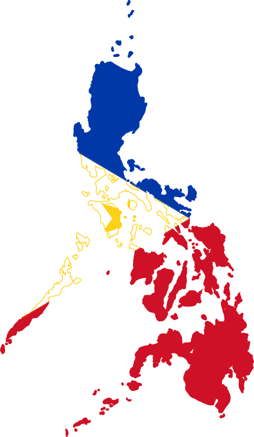

Welcome to the Philippines!

Welcome to the Philippines! Let's visit popular tourist destinations.
Places to Visit
- El Nido, Palawan
- Boracay Island, Aklan
- Cebu City, Cebu
- Vigan City, Ilocos Sur
- Chocolate Hills, Bohol

Welcome to the Philippines! Let's visit popular tourist destinations.